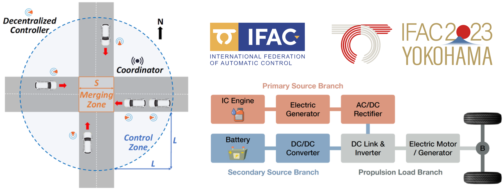

| CV |
Email |
Google Scholar |
|
I am a Ph.D. Candidate in Robotics at the JC STEM Lab of Robotics for Soft Materials, The University of Hong Kong, supervised by Prof Kazuhiro Kosuge and co-supervised by Prof Norman Tien. I am also affiliated with the Centre for Transformative Garment Production, Hong Kong SAR. Before that, I received my M.Sc. with Distinction in Control and optimisation from Imperial College London, supervised by Prof Simos Evangelou, and my B.Eng. in Mechanical & Control Engineering from South China University of Technology. Goal: Develop robot systems that solve critical real-world problems and bring happiness to people's lives. Research Interests: The intersection of robotics, robot learning, control system engineering, mechatronics, and deformable object manipulation. Current Research Question: How can we build robot systems that can leverage learning, control and mechatronics to achieve robust and precise fabric/garment manipulation and fixture-free automated sewing? Email: k.tang98 [AT] outlook.com |
|
paper |
techrxiv |
abstract |
bibtex
In this paper, we propose a novel end-effector designed for fabric edge folding along convex curves. In garment manufacturing, edge folding is essential for some parts before sewing. Existing automated folding systems rely on templates designed for specific shapes of the parts, limiting flexibility. An end-effector was previously proposed to perform straight-line edge folding by moving along a desired line. This paper focuses on the design and development of fabric edge folding along a convex curve with multiple pleats for smooth folded edges. We analyze the pleat formation and present a new end-effector design that actively generates pleats during the folding process. We conduct experiments to investigate how the fabric geometry (curvature of the folding line and folding width) affects pleat generation. Folding accuracy is also evaluated by measuring deviations between actual and desired folding lines. Results demonstrate that the proposed end-effector enables accurate, template-less folding along convex curves, offering a practical solution for flexible, automated garment manufacturing. @article{seino2026endeffector,
author={Seino, Akira and Kobayashi, Akinari and Tokuda, Fuyuki and Tang, Kai and Kosuge, Kazuhiro},
journal={IEEE/ASME Transactions on Mechatronics},
title={Design and Development of an End-Effector for Fabric Edge Folding Along a Convex Curve With Multiple Pleats},
year={2026},
pages={1-10},
doi={10.1109/TMECH.2026.3687606}
}
|
|
|
webpage |
pdf |
abstract |
bibtex |
arXiv
Robotic fabric manipulation in garment production for sewing, cutting, and ironing requires reliable flattening and alignment, yet remains challenging due to fabric deformability, effectively infinite degrees of freedom, and frequent occlusions from wrinkles, folds, and the manipulator's End‑Effector (EE) and arm. To address these issues, this paper proposes the first Random‑to‑Target Fabric Flattening (RTFF) policy, which aligns a random wrinkled fabric state to an arbitrary wrinkle‑free target state. The proposed policy adopts a hybrid Imitation Learning–Visual Servoing (IL–VS) framework, where IL learns with explicit fabric models for coarse alignment of the wrinkled fabric toward a wrinkle‑free state near the target, and VS ensures fine alignment to the target. Central to this framework is a template‑based mesh that offers precise target state representation, wrinkle‑aware geometry prediction, and consistent vertex correspondence across RTFF manipulation steps, enabling robust manipulation and seamless IL‑VS switching. Leveraging the power of mesh, a novel IL solution for RTFF—Mesh Action Chunking Transformer (MACT)—is then proposed by conditioning the mesh information into a Transformer-based policy. The RTFF policy is validated on a real dual‑arm tele‑operation system, showing zero‑shot alignment to different targets, high accuracy, and strong generalization across fabrics and scales. @misc{tang2025rtff,
title={RTFF: Random-to-Target Fabric Flattening Policy using Dual-Arm Manipulator},
author={Kai Tang and Dipankar Bhattacharya and Hang Xu and Fuyuki Tokuda and Norman C. Tien and Kazuhiro Kosuge},
year={2025},
eprint={2510.00814},
archivePrefix={arXiv},
primaryClass={cs.RO},
url={https://arxiv.org/abs/2510.00814}
}
|
|
|
paper |
techrxiv |
abstract |
bibtex
In this paper, we propose a method to align and place a fabric piece on top of another using a dual-arm manipulator and a grayscale camera, so that their surface textures are accurately matched. We propose a novel control scheme that combines Transformer-driven visual servoing with dual-arm impedance control. This approach enables the system to simultaneously control the pose of the fabric piece and place it onto the underlying one while applying tension to keep the fabric piece flat. Our transformer-based network incorporates pre-trained backbones and a newly introduced Difference Extraction Attention Module (DEAM), which significantly enhances pose difference prediction accuracy. Trained entirely on synthetic images generated using rendering software, the network enables zero-shot deployment in real-world scenarios without requiring prior training on specific fabric textures. Real-world experiments demonstrate that the proposed system accurately aligns fabric pieces with different textures. @article{tokuda2026transformer,
author={Tokuda, Fuyuki and Seino, Akira and Kobayashi, Akinari and Tang, Kai and Kosuge, Kazuhiro},
journal={IEEE Robotics and Automation Letters},
title={Transformer Driven Visual Servoing for Fabric Texture Matching Using Dual-Arm Manipulator},
year={2026},
volume={11},
number={2},
pages={1522-1529},
doi={10.1109/LRA.2025.3643335}
}
|
|
|
pdf |
abstract |
bibtex
Accurate fabric alignment is a critical step that must be performed before sewing. This paper presents a novel automated fabric alignment system that estimates the poses of top and bottom fabric panels—lying flat and wrinkle-free in arbitrary positions—using a new Global Local Weighted Iterative Closest Point (GLW-ICP) method, and manipulates the top panel to achieve precise alignment at both edges and sewing lines. Unlike conventional approaches, GLW-ICP robustly aligns both global edges and local sewing lines by globally aligning fabric edge points and locally aligning sewing line points to their corresponding CAD model points, while removing unmatched points in occluded regions. Real-world experiments with various fabric shapes show that the system consistently achieves millimeter-level alignment accuracy under both occlusion and non-occlusion conditions, demonstrating its effectiveness and suitability for automated fabric alignment in practical scenarios. @article{dong2025novel,
author={Dong, Wenbo and Tang, Kai and Bhattacharya, Dipankar and Kobayashi, Akinari and Tokuda, Fuyuki and Seino, Akira and Tien, Norman C. and Kosuge, Kazuhiro},
title={A Novel Fabric Alignment System for Sewing},
year={2025},
publisher={TechRxiv},
doi={10.36227/techrxiv.175691617.74372270/v1}
}
|
|
|
pdf |
abstract |
bibtex
Inspired by human workers who perform complicated sewing tasks by repeating relatively simple operations, this paper proposes a fixture-free automated sewing system using a dual-arm manipulator and an ordinary sewing machine to sew two aligned fabrics along the edges, a common task in garment production. The proposed sewing system has a five-layer architecture: perception, dual-arm sewing Petri net, fundamental operations, control primitives, and hardware layers. This architecture decomposes various complex sewing tasks into sequences of fundamental operations. To meet the real-time requirement of automated sewing, a High-speed Fabric Edge Detection System (Hi-FEDS) is further proposed for the perception layer, which formulates the fabric edge detection problem for sewing as a classification problem of predefined distributed anchors. The anchor distribution is modeled by the Gaussian Uniform Mixture Model (GUMM). This method achieves high-speed fabric edge detection at an average of 120 FPS, with an average error of about one pixel. An experimental robotic sewing platform is developed, and the sewing results show that our system achieves high-quality sewing across fabrics of various shapes and materials. @article{tang2025fixture,
author={Tang, Kai and Huang, Xuzhao and Seino, Akira and Tokuda, Fuyuki and Kobayashi, Akinari and Tien, Norman C. and Kosuge, Kazuhiro},
journal={IEEE Robotics and Automation Letters},
title={Fixture-Free Automated Sewing System Using Dual-Arm Manipulator and High-Speed Fabric Edge Detection},
year={2025},
volume={10},
number={9},
pages={8962-8969},
doi={10.1109/LRA.2025.3592145}
}
|
|
|
pdf |
abstract |
bibtex
Fabric flattening and alignment are foundational yet challenging operations in automated garment manufacturing. In this paper, we propose a dual-arm manipulator system for flattening a fabric part and aligning it with a desired pose on the flat table using a flinging operation and visual servoing. The dual-arm manipulator holds the fabric part and conducts the flinging operation first to eliminate the wrinkles on the fabric part. After the flinging operation, the dual-arm manipulator pulls the fabric part to align it with the desired pose using visual servoing, while keeping it flat. To achieve this, we propose a real-time mesh tracking scheme for the fabric, which consists of a global registration and a fine registration. The global registration registers a canonical mesh to the captured point cloud. The fine registration is based on the As-Rigid-As-Possible (ARAP) deformation framework as a model-free method, which preserves the overall mesh shape while allowing fine wrinkle reconstruction. The experimental results demonstrate that the proposed system is capable of real-time mesh registration, effective wrinkle elimination via flinging, and precise fabric alignment through visual servoing. @inproceedings{lo2025fabric,
author={Lo, Edmund and Huang, Xuzhao and Tang, Kai and Seino, Akira and Tokuda, Fuyuki and Kosuge, Kazuhiro},
booktitle={2025 IEEE International Conference on Mechatronics and Automation (ICMA)},
title={Fabric Flattening and Alignment System Using Real-Time Mesh-Based State Estimation and Visual Servoing},
year={2025},
pages={328-334},
doi={10.1109/ICMA65362.2025.11120640}
}
|
|
|
pdf |
abstract |
bibtex
Automating the sewing process presents significant challenges due to the inherent softness of fabrics and the limited control capabilities of sewing systems. To realize sewing automation, we propose a time-scaling modeling and control architecture of the robotic sewing system. By using the time-scaling modeling, the nonholonomic kinematics of the sewing process of the industrial sewing machine is linearized precisely. Based on this model, a two-layer real-time control architecture is proposed. The upper layer controls the sewn seam line trajectory using the model-based feedback control implemented in the time-scaling domain, while the lower layer controls the manipulator and the sewing machine using geometric-based trajectory generation and coordinated motion control of the robot and the sewing system in the time domain. The experimental results demonstrate that the sewing trajectories exponentially converge to the desired trajectories without overshooting under different initial conditions and sewing speeds. Besides, the same sewing trajectories under different sewing speeds are obtained for a given stitch size. The sewing results show the good performance and application potential of the proposed robotic sewing system. @article{tang2024timescaling,
author={Tang, Kai and Tokuda, Fuyuki and Seino, Akira and Kobayashi, Akinari and Tien, Norman C. and Kosuge, Kazuhiro},
journal={IEEE/ASME Transactions on Mechatronics},
title={Time-Scaling Modeling and Control of Robotic Sewing System},
year={2024},
volume={29},
number={4},
pages={3166-3174},
doi={10.1109/TMECH.2024.3398713}
}
|
|
 |
pdf |
abstract |
bibtex
The development of electric and connected vehicles as well as automated driving technologies are key towards the smart city, providing convenient urban mobility and high energy economy performance. However, the global rise in electricity price provokes renewed interest on CAVs with hybrid electric powertrains rather than considering battery electric powertrains. This paper proposes a decentralized coordination strategy for a group of connected autonomous vehicles (CAVs) with a series hybrid electric (sHEV) powertrain at urban signal-free intersections. The problem is formulated as a convex form with suitable relaxation and approximation of the powertrain model solved by decentralized model predictive control (DMPC), which enables rapid search and a unique solution in real-time. Numerical examples validate the effectiveness of the proposed methods concerning physical and safety constraints. By utilizing the petrol fuel and battery charging prices over the last year, the performance of the proposed approach is evaluated against the optimal results produced by two benchmark solutions, conventional vehicles (CVs) and battery electric vehicles (BEVs). The comparison results demonstrate that the traveling cost of sHEVs approaches and, even under some circumstances, reaches the same level for BEVs, which indicates the importance of hybridization, particularly under the current rising electricity situation. @article{tang2023economic,
author={Tang, Kai and Wang, Weijie and Pan, Xiao and Chen, Boli and Evangelou, Simos A.},
journal={IFAC-PapersOnLine},
title={Economic Potential for Hybrid Electric Vehicles in Urban Signal-free Intersections with Decentralized MPC},
year={2023},
volume={56},
number={2},
pages={10677-10683},
doi={10.1016/j.ifacol.2023.10.719}
}
|
Website template from here |